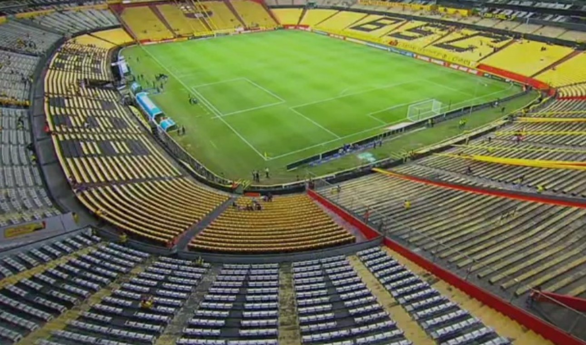

Campeonato Liga Pro 2024
Tabla de Posiciones
| Posición |
Equipo |
PJ |
PG |
PE |
PP |
GF |
GC |
Pts |
| 1 |
independiente |
8 |
5 |
1 |
2 |
17 |
10 |
16 |
| 2 |
LDU QUITO |
8 |
5 |
1 |
2 |
17 |
9 |
16 |
| 3 |
Orense |
8 |
5 |
1 |
2 |
14 |
10 |
16 |
| 4 |
U.Catolica |
8 |
4 |
1 |
3 |
16 |
13 |
13 |
Jugadores Destacados
| Jugador |
Equipo |
Posición |
Goles |
Asistencias |
| Alex Arce |
liga de quito |
Delantero |
19 |
5 |
| Jeison Medina |
independiente del valle |
Delantero |
14 |
12 |
| Pablo Magnín |
Deportivo Cuenca |
Delantero |
14 |
12 |
| Kendry Páez |
independiente del valle |
Mediocampista |
2 |
12 |
Próximos Enfrentamientos
| Fecha y dia |
Equipo Local |
Versus |
Equipo Visitante |
Hora |
| 05/10/2024 sabado |
Dep.Cuenca |
VS |
Tecnico Universitario |
4:30 pm |
| 06/10/2024 domingo |
LDU Quito |
VS |
Orense |
3:30 pm |
| 06/10/2024 domingo |
Emelec |
VS |
Aucas |
6:00 pm |
| 19/10/2024 jueves |
independiente del valle |
VS |
Imbabura |
4:30 pm |
Imágenes de Estadios
Estadio imagen 2
